CAMPEONATOS DEL FUTSAL
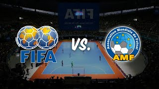Debido a que existen dos entes rectores de fútbol (AMF y FIFA), ambos organizan eventos paralelos bajo sus propios reglamentos. A continuacion les mostraremos cuales serían los principales torneos de cada organización en cada categoría.
SELECCIONES MASCULINAS
| FIFA | AMF/FIFUSA |
|---|---|
| Copa Mundial de fútbol sala de la FIFA | Campeonato Mundial de la AMF |
| Copa Confederaciones de fútbol sala | Copa del Mundo de Selecciones Nacionales |
| Eurocopa de Fútbol Sala | Sin equivalente |
| Copa América de Fútbol Sala | Sudamericano |
| Campeonato Africano de Futsal | Sin equivalente |
| Campeonato Asiático de Futsal | Sin equivalente |
| Campeonato de Futsal de Concacaf | Sin equivalente |
| Campeonato de Futsal de la OFC | Sin equivalente |
A NIVEL OLIMPICO
- Juegos de la Lusofonía, reglas FIFA.
- Juegos Panamericanos, reglas FIFA.
- Juegos Mundiales, reglas AMF.
- Juegos Centroamericanos, reglas FIFA.
- Juegos Bolivarianos, reglas FIFA.
- Juegos ODESUR, reglas FIFA.
- Se implementará como deporte de prueba en los Juegos Olímpicos de la Juventud Buenos Aires 2018 por parte de la FIFA, reemplazando al fútbol.
A NIVEL CLUBES
| FIFA | AMF/FIFUSA |
|---|---|
| Copa Intercontinental de fútbol sala | Campeonato Mundial de Clubes |
| Copa UEFA de Fútbol Sala | Copa de Campeones de la FEF |
| Recopa de Europa de Fútbol Sala | Sin equivalente |
| Copa Libertadores de Futsal | Panamericano y/o Sudamericano de Clubes |
| Campeonato de Clubes de Asia (AFC) | Sin equivalente |
| Campeonato Futsal de Clubes | Sin equivalente |
| Sin equivalente | Copa de Campeones Femenina de la FEF |
SELECCIONES FEMENINAS
| FIFA | AMF/FIFUSA |
|---|---|
| Mundial femenino de la FIFA | Mundial femenino de la AMF |
| Sudamericano Femenino | Sudamericano Femenino de Fútbol de Salón |
SELECCIONES MASCULINAS JUVENILES
| FIFA | AMF/FIFUSA |
|---|---|
| Sin equivalente | Mundial Sub-20 |
| Sudamericano Sub-20 | Sudamericano Sub 20 |
| UEFA Futsal Sub-21 | Sin equivalente |
| Sin equivalente | Mundial Sub-17 |
| Sudamericano Sub-17 | Sin equivalente |
SELECCIONES FEMENINAS JUVENILES
| FIFA | AMF/FIFUSA |
|---|---|
| Sudamericano Femenino Sub-20 | Sin equivalente |
TORNEOS NACIONALES MAS IMPORTANTES
EUROPA
- 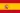 Nacional de Fútbol Sala de España.
Liga Portuguesa de Fútbol Sala.
- 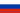 Superliga Rusa de Futsal.
- 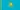 Campeonato Kazajistaní de Fútbol Sala.
- Liga Italiana de Futsal.
SUDAMÉRICA
(REGLA FIFA)
- 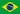Brasileira de Futsal.
- 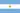Campeonato de Futsal AFA.
- 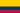 Colombiana de Fútbol Sala.
- Campeonato de Futsal FIFA de la APF.
- 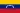 Liga Venezolana de Fútbol Sala.
(REGLA AMF)
- Superliga Profesional de Microfútbol y Superliga Profesional de Microfútbol Femenina.
- Copa de Oro.
ASIA
(REGLA FIFA)
- 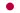 F.League de Japón.
- 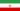 Iranian Futsal Super League.
- 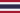 Thailand Futsal League